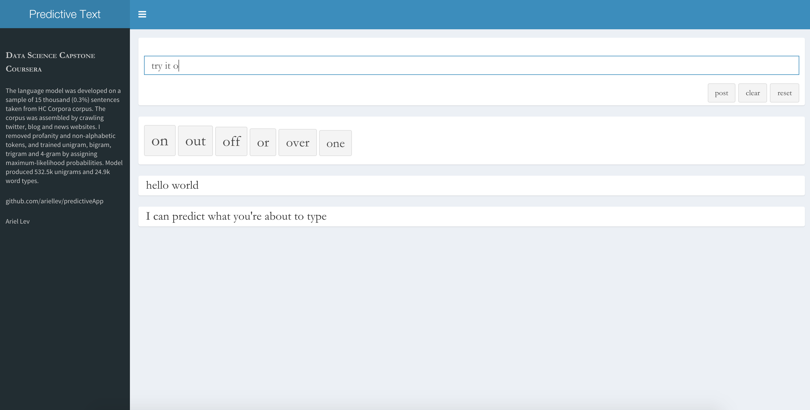

Those who have knowledge, don't predict. Those who predict, don't have knowledge.
Lao Tzu
6th Century BC Chinese Poet
ariellev02@gmail.com
Those who have knowledge, don't predict. Those who predict, don't have knowledge.
Lao Tzu
6th Century BC Chinese Poet
